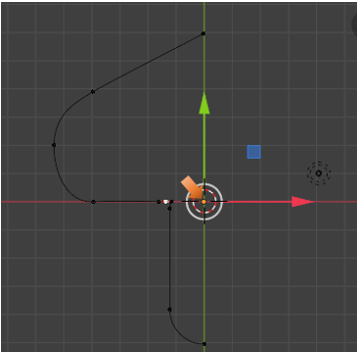
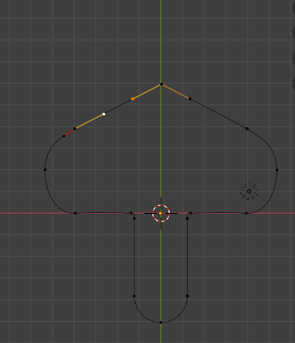

~7 Mirroring and Joining the Curve~
10/6/2025
Moving 3D Cursor to Viewport’s Mid-Point
Joining the Bottom Section of the Curve
The Starting Point
We are Starting this tutorial from here. Your shape should look like this now, if you are following along from the last tutorial.
Moving 3D Cursor to Viewport’s Mid-Point
Find where your cursor is at this moment and move it to the center of the View Port. This would be at this point here. We want to move the Cursor to where the red, and green axis lines on the grid converge.
To move the cursor to this point, Press Shift-S and then choose to return the cursor to the World Origin.
Move Pivot Point
Now we want to move the Pivot Point to the 3D Cursor. Go to the top menu, and find the Pivot Point Menu. We want to select 3D Cursor to have the Pivot point at the same location as the 3D Cursor.
Your Orange Pivot Point Dot should be inside of the 3D cursor, which is at the Mid-point of your page.

Add a Duplicate Curve
Hit the A key to select the entire Curve.
Now we need to add a duplicate to that curve that we already have. To do this, we come up to the Sub-Menu, Choose Curve, and then pick Add Duplicate. Immediately, HIT the Escape Key, to kick the new curve off of your mouse, and have it deposited in the exact same place as the first curve.
Now this is Curve upon Curve, so we will only visually see one curve.
To Mirror the Duplicate
Hit the S key, then hit the X key and -1.
If you did it correctly, your shape should look like this. If not, just go back to where you duplicated the curve, and try the S, X, -1 again.

Join the Two Curves Together
We need to do this in a certain way, or we could lose all of the assignments that we made to the handles. We do not want to lose what we set up, so we will preform this next part like this.
Select your Curve again, by hitting the A Key. Now with the curve selected we can hit that N key and open up that editing side panel. Go to the Edit Tab.

We could simply come in here and select. Join Splines and then hit the button under it that says Join Neighboring Splines, but that will change all of our handles to the handle type of Align, and that is not what we want. So, try and follow along here.
We want to select this end point right here, and first make sure that it is not already a Free handle type, if it is not, we want to change it to Free.
Now reselect that top mid- point

Hit the X key and delete this point. Choose Vertices for the Delete action. Your curves should have maintained their curves, by having the handle changed to Free, as we did above.
Add a Segment to the Curve
We are going to connect these two points by adding that segment between them. So, first we want to shift-select the two points that we want to connect.
Now go up to the top Sub-Menu, and Select the Control Points menu. From there we want to select the Make Segment option.
You will notice that this curve will come in a bit wavy.
To fix the waviness of this curve, we can shift -select these two points.

Now Shift -select this whole control to make it active.
Now Shift – Select just these two end points.
We need to Hit the V key so that we can assign Vector to both of these End Points. This way they can point at each other.
Notice, that with that change to Vector, that both handles are now pointing straight at one another. So, now you have that smooth curve that you wanted.

Joining the Bottom Section of the Curve
We only have the top section of the curve attached. So, we still need to attach the bottom two pieces together.
Select this bottom point, as shown in the illustration below.
Now press the X key with that one curve bottom point selected, and choose to Delete Vertices.
Now your curve should look like this. You should have an opening at the bottom-left of the curve.
To close this curve, however, this time we will be going to go to the Property Panel for the Curve.
We want to go to the Active Spline section, and directly under this you will see a check box for Cyclic. As soon as we check the box for Cyclic, you will notice that the opening that we have in the curve will instantly close.
The Curve closed by checking the Cyclic check box.
We are going to stop this tutorial here. In the next tutorial, we will look at how we can fill the shape and then put a hole into it.